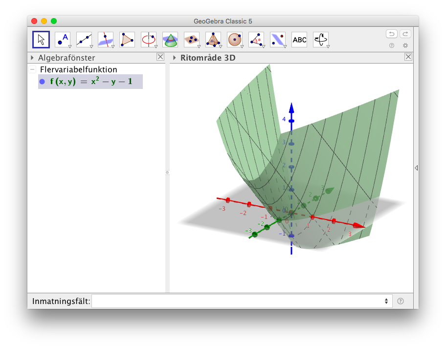
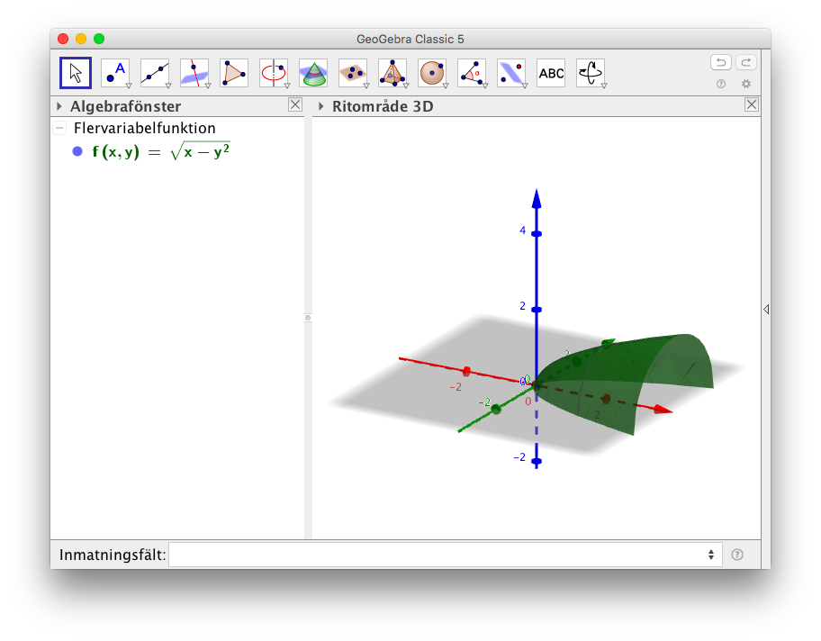
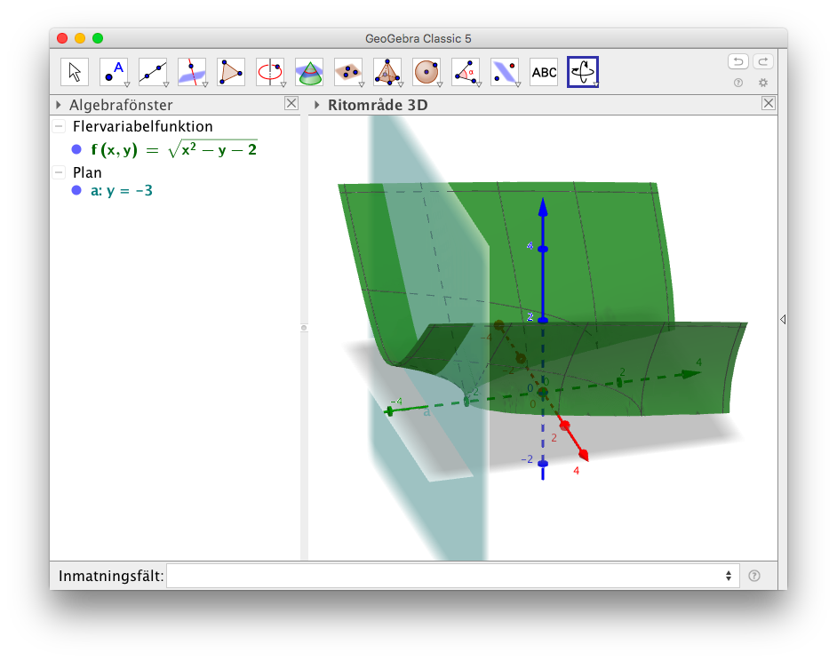
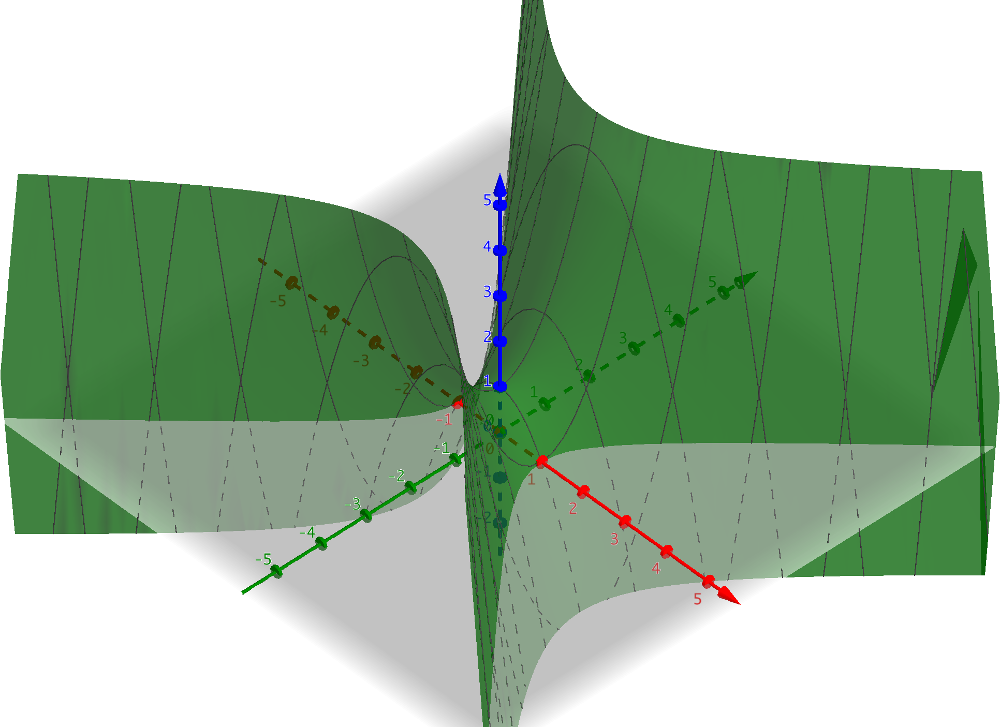
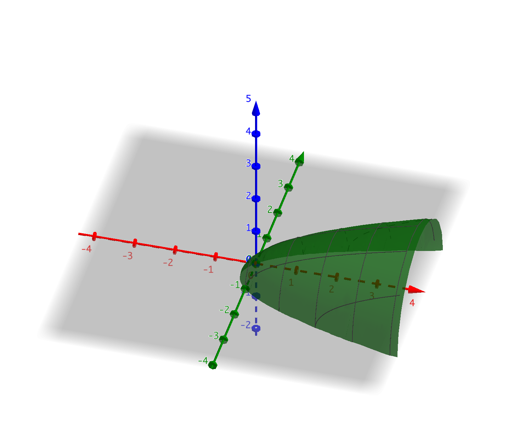
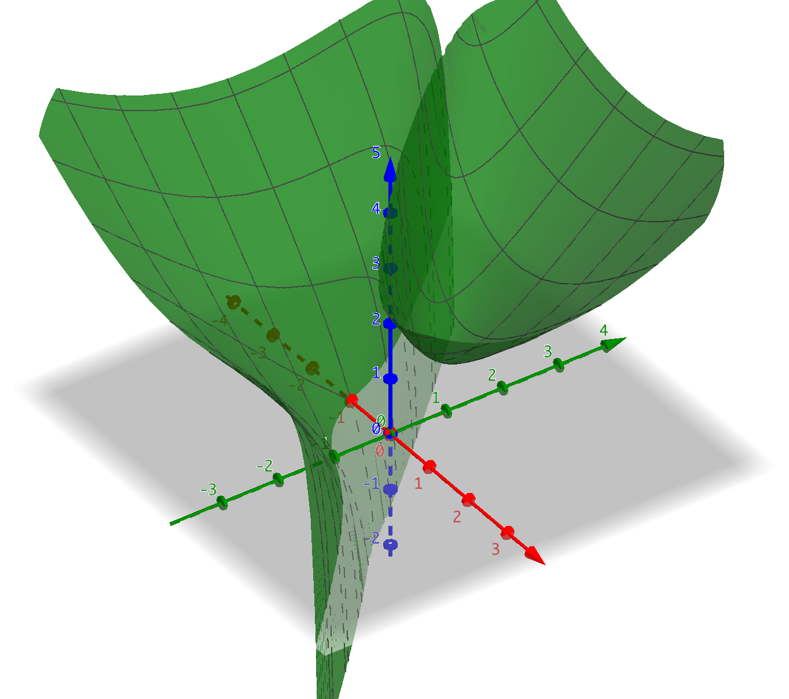
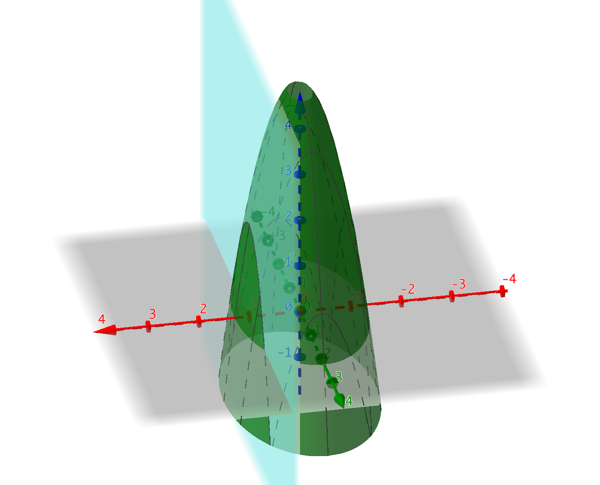

9. Funktioner i 3 dimensioner
Hittills har vi jobbat med funktioner av typ \( f(x) = \ldots \) där vi har ett samband mellan \( x \) och \( y \)-koordinater. Till nästa tar vi och jobbar med funktioner i 3 dimensioner. Då är funktionerna av typ \( f(x,y) = \ldots \). Vi sätter in värden för \( x \) och \( y \) och får en treje punkt, \( z \)-koordinat.
Exempel 1 Rita funktionen \( f(x,y)=x^2-y-1 \) i GeoGebra och bestäm den funktion som anger funktionens nollställe.
Lösning
I GeoGebra så klicka fram Ritområde 3D. (Fönstret med det vanliga koordinatsystemet kan du stänga) och skriv in funktionen i Inmatningsfältet.
Vi får

Funktionens nollställe får vi då \( f(x,y)=x^2-y-1 =0 \). Den kan vi skriva som \( y = \ldots \) eller \( x = \ldots \) beroende på situationen.
Vi får \( x^2-y-1 =0 \), alltså \( y = x^2-1\).
Nollstället är de punkter som utgör parabeln \( y = x^2-1\).
Då du ändrar på vyn för 3D Ritområdet i GeoGebra så märker du att funktionen \( f(x,y) \) bildar en parabel med ytan mot \( x,y \)-planet.
Exempel 2 Bestäm definitionsmängden för \( f(x,y)=\sqrt{x-y^2} \).
Lösning
Situationen är följande:

Eftersom vi har en rot så gäller att \( x-y^2 \geq 0 \).
Alltså då \( x \geq y^2 \).
Exempel 3 Bestäm de gemensamma punkterna för \( f(x,y)=\sqrt{x^2-y-2} \) och \( y=-3 \).
Lösning
Situationen är följande:

De gemensamma punkterna får vi då
\( \left\{\begin{array}{rcll} f(x,y) & = & \sqrt{x^2-y-2} & \\ y & = & -3 & \\ \end{array} \right. \)
Vi löser ekvationssystemet genom att sätta in \( y = -3 \) i \( f(x,y) = \sqrt{x^2-y-2} \).
Alltså \( \sqrt{x^2-(-3)-2} = \sqrt{x^2+1} \).
Funktionen som anger skärningspinkterna är \( z = \sqrt{x^2+1} \).
Uppgifter
- Låt \( f(x,y) = -x^2 +y^2 +1 \).
- Beräkna värdet av \( z \) koordinaten då \( x=2 \) och \( y=1 \).
\( f(2,1) = -2^2+1^2+1 = -2\)
- Rita funktionen på GeoGebra.
Vi får

- Bestäm den punktmängd där \( f \) skär \( xy \)-planet.
Vi söker de punkter där \( z \)-koordinaten har värdet 0.
Alltså \( f(x,y) = 0 \) som ger oss sambandet \( -x^2 +y^2+1 =0 \). Alltså \( x = \pm \sqrt{y^2+1} \).
- Beräkna värdet av \( z \) koordinaten då \( x=2 \) och \( y=1 \).
- Låt \( g(x,y) = \sqrt{x-y^2-y} \).
- Beräkna värdet av \( z \) koordinaten då \( x=4 \) och \( y=1 \).
\( f(4,1) = \sqrt{2} \)
- Rita funktionen på GeoGebra.
Vi får

- Bestäm definitonsmängden för \( g \).
\( g \) är en rotfunktion och definierad då radikanden \( x-y^2-y \geq 0 \). Alltså då \( x \geq y^2-y \).
- Beräkna värdet av \( z \) koordinaten då \( x=4 \) och \( y=1 \).
- Låt \( h(x,y) = \sqrt{x^2+y^2} + \dfrac{1}{x+y} \).
- Beräkna värdet av \( z \) koordinaten då \( x=2 \) och \( y=4 \).
\( f(2,4) = 2\sqrt{5} +\dfrac{1}{6} \)
- Rita funktionen på GeoGebra.
Vi får

- Bestäm definitonsmängden för \( h \).
\( h \) består av en rot och en kvot. Roten är definierad då \( x^2 + y^2 \geq 0 \). Som gäller för alla reellea tal.
Kvoten är inte definierad då \( x + y = 0 \). Alltså då \( y = -x \).
Dessa gäller samtidigt. Alltså är funktionen definierad för alla tal förutom då \( y = -x \).
- Beräkna värdet av \( z \) koordinaten då \( x=2 \) och \( y=4 \).
- I tabellen nedan ser du värden för köldindex, hur varmt det känns, för några temperaturer och vindhastigheter.
10 oC 5 oC 0 oC -5 oC -10 oC -15 oC -20 oC -25 oC -30 oC 2 m/s 9 3 -2 -8 -14 -20 -26 -32 -37 5 m/s 8 1 -5 -11 -17 -24 -30 -36 -42 10 m/s 6 0 -7 -14 -20 -27 -34 -40 -47 15 m/s 5 -2 -8 -15 -22 -29 -36 -43 -50 20 m/s 5 -2 -9 -16 -23 -31 -38 -45 -52 https://www.smhi.se/kunskapsbanken/meteorologi/vindens-kyleffekt-1.259 Vi betecknar köldindex med \( \text{WCT} = f(v,T) \) där \( v \) är vindens hastighet och \( T \) är temperaturen. Använd dig av tabellen för att svara på följande frågor.
- Vilket av värden \( f(5,-5) \) eller \( f(2,-10) \) är större?
Vi har \( f(5,-5)=-11 \) och \( f(2,-10)=-14 \).
Alltså känns det varmare då det blåser 5 m/s och temperaturen är -5oC.
- Bestäm en lösning för ekvationen \( f(v,T) = -20 \).
Det finns två lösningar. Ena är \( f(2,-15) \) och den andra är \( f(10,-10) \).
- Bestäm i alla fall tre lösningar för olikheten \( -10 \leq f(v,T) \leq -20 \).
Tex \( f(5,-5) \), \( f(10,-5) \) och \( f(15,-5) \).
- Vilket av värden \( f(5,-5) \) eller \( f(2,-10) \) är större?
- Bestäm de gemensamma punkterna för \( f(x,y) = 2-\sqrt{x^2+y^2} \) och \( g(x,y)=x^2+y^2 \).
Vi löser ekvationen
\( \begin{array}{rcll} f(x,y) & = & g(x,y) \\ 2-\sqrt{x^2+y^2} & = & x^2 + y^2 & \mid (\quad)^2 \\ 4 - 4\sqrt{x^2+y^2} + x^2+y^2 & = & x^2 +y^2 \\ 4\sqrt{x^2+y^2} & = & 4 \\ \sqrt{x^2+y^2} & = & 1 & \mid (\quad)^2 \\ x^2+y^2 & = & 1 & \\ \end{array} \)
De gemensamma punkterna är \( x^2+y^2 = 1 \), som är en origocentrerad cirkel med radien 1.
- Låt \( f(x,y) = x^2 +2y \) och \( g(t) = \sin t \). Bilda, om möjligt, de sammansatta funktionerna \( g(f(x,y)) \) och \( f(g(t)) \) och bestäm de punkter där den sammansatta funktionen får värdet noll.
De sammansatta funktionerna:
\( g(f(x,y)) = \sin(x^2+2y) \) och \( f(g(t)) \) kan vi inte skapa.
\( g(f(x,y)) = 0 \) då \( \sin(x^2+2y) = 0 \). Alltså då \( x^2+2y = 0 + \pi \cdot n \).
Nollstället är \( y = -\dfrac{1}{2}x^2 + n\cdot \dfrac{\pi}{2}, n \in \mathbf{Z} \).
- Köldindex (WCT), hur kall luften känns då det blåser, kan räknas med formeln \( WCT = 13,12 + 0,6215\cdot T_{\text{luft}} - 13,956\cdot V^{0,16} + 0,4867\cdot T_{\text{luft}}\cdot V^{0,16} \) där \( V \) är vindens hastighet i m/s och \( T \) är temperaturen i grader Celcius.
Gör en tabell på kalkyleringsprogram varifrån man kan avläsa köldindex beroende på rådande temperatur och vind. Jobba med vindhastigheter mellan 2 m/s och 35 m/s och temperaturer mellan 10oC och -40oC.
Lösningen
- Grafen av funktionen \( f(x,y) = 5-3x^2-y^2 \) skärs med planet \( x = 1 \). Rita upp funktionen och planet på GeoGebra. Vilken form har snittytan? Bestäm ekvationen för snittytan.
Figuren ser ut som

Vi har en parabel.
Bilda ett ekvationssystem, och sätt in \( x =1 \) i \( f(x,y) \).
Kom fram till \( z = 2-y^2 \).
- Visa att funktionen \( f(x,y) = x^2-3xy+3y^2 \) där \( \mathbf{R} \to \mathbf{R} \) alltid är positiv. Visa också att funktionen får alla icke negativa reella tal.
Vi kvadratkompletterar funktionen.
\( \begin{array}{rcl} f(x,y) & = & x^2 -3xy +3y^2 \\ & = & x^2 -3xy +(\dfrac{3}{2}y)^2 +3y^2 -(\dfrac{3}{2}y)^2 \\ & = & (x-\dfrac{3}{2}y)^2 +3y^2 -\dfrac{9}{4}y^2 \\ & = & (x-\dfrac{3}{2}y)^2 +\dfrac{3}{4}y^2 \\ \end{array} \)
Eftersom en kvadrat alltid är icke negativ (positiv) är \( f(x,y) \) alltid icke negativ.
Då \( y = 0 \) gäller att \( f(x,y)=x^2 \). Funktionen \( x^2 \) får alla icke negativa reella tal, alltså får \( f(x,y) \) alla icke negativa reella tal.